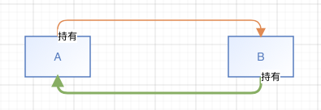
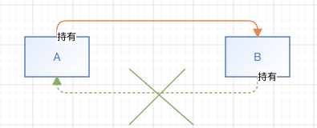

循环引用/内存泄漏
首先我们说一下什么是循环引用，说白了就是互相持有，无法释放

那么如果想要解决这个问题要怎么做呢？也很简单，打破这个循环，让其中一方变成弱引用

道理是这么个道理，当然了，说起来是很简单，要想真正解决这个问题，首先要了解都有哪几种方式会引发循环引用，了解其中原理之后，想要解决问题不就简单咯。
``` Creates a timer and schedules it on the current run loop in the default mode. ```
苹果官方文档是这么说的，如果是在主线成创建的，那么自然加入到主线程中，这里有个坑是，当发生滚动事件时，timer不会执行。如果加入的是子线程，需要手动开启runloop，因为子线程的runloop默认是不开启的。
- 2.
```let timer = Timer.init(timeInterval: 1, target: self, selector: #selector(test), userInfo: nil, repeats: true)```
```RunLoop.current.add(timer, forMode: RunLoop.Mode.common)```
官方文档这么说的：
1
2
target
The object to which to send the message specified by aSelector when the timer fires. The timer maintains a strong reference to target until it (the timer) is invalidated.
和上面一样，只是这种方式需要手动添加runloop。
需要注意的是 以上这两种创建timer的方式，会将 self传给timer强引用，故需要在 timer.invalidate()后才会释放引用。
但有时候我们的代码可能在dealloc/deinit的时候才会去 invalidate,那么一定要注意，这个时候，如果没有其他处理，就会导致循环引用了。
那么，如果我的释放时机只能是dealloc/deinit的话，有没有其他方式解决呢？有的，代理模式。
创建一个代理类，来弱持有当前的self
1
2
3
4
5
6
7
8
9
10
11
12
13
14
15
16
17
18
19
20
21
22
23
24
25
26
27
28
29
30
31
32
33
34
35
36
37
38
39
40
41
42
43
44
45
46
47
48
49
50
51
52
53
54
55
56
57
58
59
60
61
62
class GDProxy: NSObject {
weak var target: NSObjectProtocol?
var sel: Selector?
public convenience init(target: NSObjectProtocol?, sel: Selector?) {
self.init()
self.sel = sel
self.target = target
}
override func forwardingTarget(for aSelector: Selector!) -> Any? {
return self.target
}
// NSObject 一些方法复写
override func isEqual(_ object: Any?) -> Bool {
return target?.isEqual(object) ?? false
}
override var hash: Int{
return target?.hash ?? -1
}
override var superclass: AnyClass?{
return target?.superclass ?? nil
}
override func isProxy() -> Bool {
return true
}
override func isKind(of aClass: AnyClass) -> Bool {
return target?.isKind(of: aClass) ?? false
}
override func isMember(of aClass: AnyClass) -> Bool {
return target?.isMember(of: aClass) ?? false
}
override func conforms(to aProtocol: Protocol) -> Bool {
return target?.conforms(to: aProtocol) ?? false
}
override func responds(to aSelector: Selector!) -> Bool {
return target?.responds(to: aSelector) ?? false
}
override var description: String{
return target?.description ?? "nil"
}
override var debugDescription: String{
return target?.debugDescription ?? "nil"
}
deinit {
print("Proxy释放了")
}
}
使用的如下即可：
1
2
let proxy = GDProxy.init(target: self, sel: #selector(test))
let time = Timer.scheduledTimer(timeInterval: 1, target: proxy, selector: #selector(test), userInfo: nil, repeats: true)
- 3.
``` Timer.scheduledTimer(withTimeInterval: 1, repeats: true) { timer in } ```
这种方式是通过block回调，不会持有self